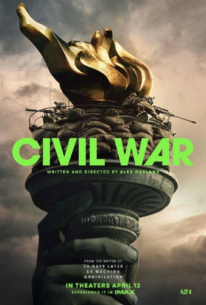

Guerra Civil
Sinopse: Dirigido pelo premiado Alex Garland (Ex Machina), Guerra Civil apresenta uma mistura de ação e suspense, ambientado em um futuro não tão distante, quando uma guerra civil se instaura nos Estados Unidos. Neste cenário, uma equipe pioneira de jornalistas de guerra, onde estão Lee (Kirsten Dunst) e seu colega de trabalho Joel (Wagner Moura), viajam pelo país para registrar a dimensão e a situação de um cenário violento que tomou as ruas em uma rápida escalada, envolvendo toda a nação. No entanto, o trabalho de registro se transforma em uma guerra de sobrevivência quando eles também se tornam o alvo. O elenco conta ainda com nomes como Stephen McKinley Henderson, Jesse Plemmons e Nick Offerman.
Comentário: Dirigido pelo premiado Alex Garland (Ex Machina), Guerra Civil apresenta uma mistura de ação e suspense, ambientado em um futuro não tão distante, quando uma guerra civil se instaura nos Estados Unidos. Neste cenário, uma equipe pioneira de jornalistas de guerra, onde estão Lee (Kirsten Dunst) e seu colega de trabalho Joel (Wagner Moura), viajam pelo país para registrar a dimensão e a situação de um cenário violento que tomou as ruas em uma rápida escalada, envolvendo toda a nação. No entanto, o trabalho de registro se transforma em uma guerra de sobrevivência quando eles também se tornam o alvo. O elenco conta ainda com nomes como Stephen McKinley Henderson, Jesse Plemmons e Nick Offerman.
VOLTAR